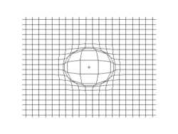
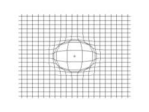

歡迎
請從左側選單選擇一個項目查看。
溫度資訊
正在載入溫度數據...
天氣預報
正在載入天氣數據...
地震資訊
正在載入地震數據...
降雨的形成
降雨是由水蒸氣凝結成水滴後落下的過程。當空氣中的水蒸氣冷卻到露點以下時，就會形成雲，進而可能導致降雨。
- 蒸發:太陽照射地球表面，使水體（如海洋、湖泊、河流和土壤中的水）蒸發成水蒸氣，進入大氣中。
- 上升與冷卻:水蒸氣隨著空氣上升到高空。在高空中，氣溫較低，水蒸氣隨之冷卻。
- 凝結:當水蒸氣冷卻到露點溫度時，會在空氣中的微小粒子（如塵埃、鹽粒）上凝結成小水滴或冰晶，形成雲。
- 雲滴成長:雲中的小水滴或冰晶在不斷碰撞、合併的過程中逐漸變大。當它們大到無法被空氣浮力支撐時，就會開始下降。
氣溫的影響
氣溫影響著地球上的生態系統和人類活動。高溫可以導致乾旱，而低溫則可能引發寒潮。
- 溫度:物體冷熱程度的物理量，微觀上來講是物體分子熱運動的劇烈程度。
- 氣溫:大氣層中氣體的溫度，是氣象學常用名詞。
- 太陽輻射:太陽是地球主要的熱源，太陽輻射的強度和角度會影響地表溫度。
- 大氣層:大氣層中的氣體和雲層可以吸收、反射或散射太陽輻射，從而影響地表溫度。
- 地形:山脈、海洋、湖泊等地形特徵會影響局部氣候和溫度分布。
- 人類活動:工業排放、城市化等人類活動也會對氣溫產生影響，例如城市熱島效應。
地震的原因
地震通常是由地殼板塊運動造成的。當板塊之間的應力釋放時，就會產生震動，這就是我們所感受到的地震。
- 地殼板塊運動:地球的外殼由多個板塊組成，這些板塊在地幔的對流作用下不斷移動。
- 應力積累:當板塊之間的摩擦力阻止它們自由移動時，應力會在接觸面積上積累。
- 斷層滑動:當應力達到一定程度時，斷層面上的摩擦力被克服，板塊突然滑動，釋放出能量。
- 震波產生:釋放的能量以震波的形式向四周傳播，這就是我們感受到的地震。
地震波
地震波是地震釋放能量後產生的震動波。主要分為P波和S波。
 
